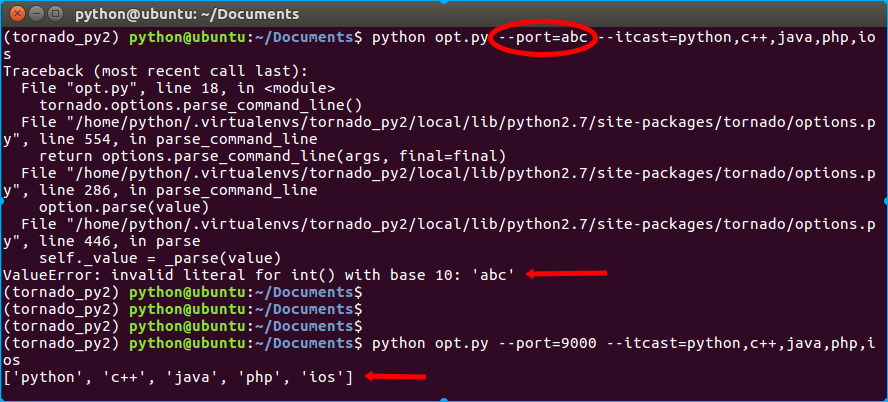
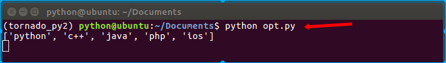
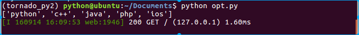

2.4 options
在前面的示例中我们都是将服务端口的参数写死在程序中，很不灵活。
tornado为我们提供了一个便捷的工具，tornado.options模块——全局参数定义、存储、转换。
tornado.options.define()
用来定义options选项变量的方法，定义的变量可以在全局的tornado.options.options中获取使用，传入参数：
- name 选项变量名，须保证全局唯一性，否则会报“Option 'xxx' already defined in ...”的错误；
- default 选项变量的默认值，如不传默认为None；
- type 选项变量的类型，从命令行或配置文件导入参数的时候tornado会根据这个类型转换输入的值，转换不成功时会报错，可以是str、float、int、datetime、timedelta中的某个，若未设置则根据default的值自动推断，若default也未设置，那么不再进行转换。可以通过利用设置type类型字段来过滤不正确的输入。
- multiple 选项变量的值是否可以为多个，布尔类型，默认值为False，如果multiple为True，那么设置选项变量时值与值之间用英文逗号分隔，而选项变量则是一个list列表（若默认值和输入均未设置，则为空列表[]）。
- help 选项变量的帮助提示信息，在命令行启动tornado时，通过加入命令行参数 --help 可以查看所有选项变量的信息（注意，代码中需要加入tornado.options.parse_command_line()）。
tornado.options.options
全局的options对象，所有定义的选项变量都会作为该对象的属性。
tornado.options.parse_command_line()
转换命令行参数，并将转换后的值对应的设置到全局options对象相关属性上。追加命令行参数的方式是--myoption=myvalue
新建opt.py，我们用代码来看一下如何使用：
# coding:utf-8
import tornado.web
import tornado.ioloop
import tornado.httpserver
import tornado.options # 新导入的options模块
tornado.options.define("port", default=8000, type=int, help="run server on the given port.") # 定义服务器监听端口选项
tornado.options.define("itcast", default=[], type=str, multiple=True, help="itcast subjects.") # 无意义，演示多值情况
class IndexHandler(tornado.web.RequestHandler):
"""主路由处理类"""
def get(self):
"""对应http的get请求方式"""
self.write("Hello Itcast!")
if __name__ == "__main__":
tornado.options.parse_command_line()
print tornado.options.options.itcast # 输出多值选项
app = tornado.web.Application([
(r"/", IndexHandler),
])
http_server = tornado.httpserver.HTTPServer(app)
http_server.listen(tornado.options.options.port)
tornado.ioloop.IOLoop.current().start()
执行如下命令开启程序：
$ python opt.py --port=9000 --itcast=python,c++,java,php,ios
效果如下： 
tornado.options.parse_config_file(path)
从配置文件导入option，配置文件中的选项格式如下：
myoption = "myvalue"
myotheroption = "myothervalue"
我们用代码来看一下如何使用，新建配置文件config，注意字符串和列表按照python的语法格式：
port = 8000
itcast = ["python","c++","java","php","ios"]
修改opt.py文件：
# coding:utf-8
import tornado.web
import tornado.ioloop
import tornado.httpserver
import tornado.options # 新导入的options模块
tornado.options.define("port", default=8000, type=int, help="run server on the given port.") # 定义服务器监听端口选项
tornado.options.define("itcast", default=[], type=str, multiple=True, help="itcast subjects.") # 无意义，演示多值情况
class IndexHandler(tornado.web.RequestHandler):
"""主路由处理类"""
def get(self):
"""对应http的get请求方式"""
self.write("Hello Itcast!")
if __name__ == "__main__":
tornado.options.parse_config_file("./config") # 仅仅修改了此处
print tornado.options.options.itcast # 输出多值选项
app = tornado.web.Application([
(r"/", IndexHandler),
])
http_server = tornado.httpserver.HTTPServer(app)
http_server.listen(tornado.options.options.port)
tornado.ioloop.IOLoop.current().start()

说明
1. 日志
当我们在代码中调用parse_command_line()或者parse_config_file()的方法时，tornado会默认为我们配置标准logging模块，即默认开启了日志功能，并向标准输出（屏幕）打印日志信息。

如果想关闭tornado默认的日志功能，可以在命令行中添加--logging=none 或者在代码中执行如下操作:
from tornado.options import options, parse_command_line
options.logging = None
parse_command_line()
2. 配置文件
我们看到在使用prase_config_file()的时候，配置文件的书写格式仍需要按照python的语法要求，其优势是可以直接将配置文件的参数转换设置到全局对象tornado.options.options中；然而，其不方便的地方在于需要在代码中调用tornado.options.define()来定义选项，而且不支持字典类型，故而在实际应用中大都不使用这种方法。
在使用配置文件的时候，通常会新建一个python文件（如config.py），然后在里面直接定义python类型的变量（可以是字典类型）；在需要配置文件参数的地方，将config.py作为模块导入，并使用其中的变量参数。
如config.py文件：
# conding:utf-8
# Redis配置
redis_options = {
'redis_host':'127.0.0.1',
'redis_port':6379,
'redis_pass':'',
}
# Tornado app配置
settings = {
'template_path': os.path.join(os.path.dirname(__file__), 'templates'),
'static_path': os.path.join(os.path.dirname(__file__), 'statics'),
'cookie_secret':'0Q1AKOKTQHqaa+N80XhYW7KCGskOUE2snCW06UIxXgI=',
'xsrf_cookies':False,
'login_url':'/login',
'debug':True,
}
# 日志
log_path = os.path.join(os.path.dirname(__file__), 'logs/log')
使用config.py的模块中导入config，如下：
# conding:utf-8
import tornado.web
import config
if __name__ = "__main__":
app = tornado.web.Application([], **config.settings)
...